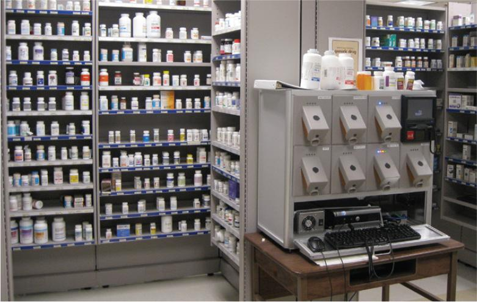
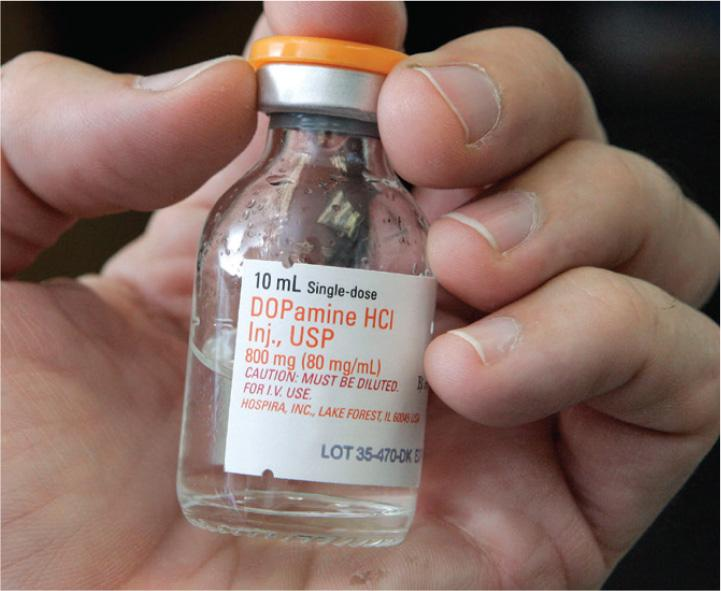
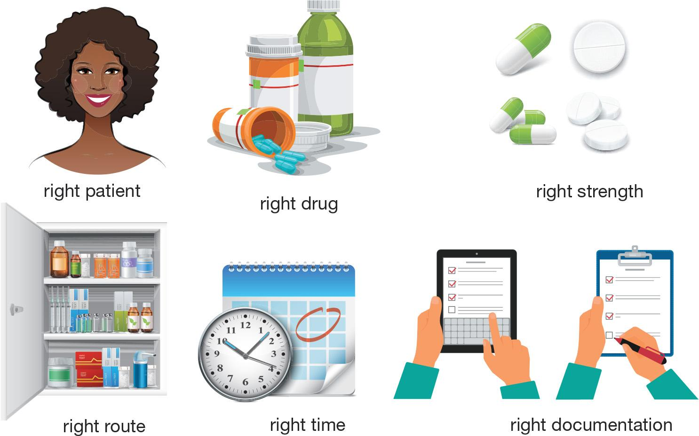

PART 1: CONCEPTS
The US Food and Drug Administration (FDA) reports that medication errors injure more than 1.3 million individuals annually in the United States. Information about the effects of medication errors comes mainly from studies done in the hospital setting and is most likely underreported and underestimated. In fact, preventable medical errors (which include medication errors) are the third-leading cause of death in the United States, according to a 2013 report (updated in 2017) in the Journal of Patient Safety. This spike in preventable hospital deaths has facilities examining their staff training and current policies and procedures to effect change and to ensure the health and well-being of their patients.
This chapter specifically examines one common type of medical error: the medication error. Some of the topics addressed include the types of failures that result in medication errors, safety practices that avoid these failures, medication error reporting systems, and medication safety resources that make healthcare personnel aware of the potential dangers of handling certain medications.
2.2 Medication Errors
Adherence to medication safety standards is the responsibility of every healthcare professional. Any breach of established safety guidelines could lead to a medication error. The National Coordinating Council for Medication Error Reporting and Prevention (NCC MERP) defines a medication error as “any preventable event that may cause or lead to inappropriate medication use or patient harm while the medication is in the control of the healthcare professional, patient, or consumer. Such events may be related to professional practice, health care products, procedures, and systems, including prescribing; order communication, product labeling, packaging, and nomenclature; compounding; dispensing; distribution; administration; education; monitoring; and use.”
Reasons for Medication Errors
Medication errors can be categorized according to what factors caused the failure of the desired result. The purpose of defining medication errors in this way is to identify what the error was, where it took place, and what caused it. Such analysis identifies ways to eliminate or reduce future errors. Most medication errors fall into one of three classes of failure: organizational failure, human failure, and technical failure.
Organizational Failure
An organizational failure occurs because of a deficiency in a facility’s rules, policies, or procedures. Therefore, the responsibility for organizational failure lies with the healthcare facility. In a sterile compounding facility, an example of an organizational failure would be the existence of a policy in a Policy and Procedures (P&P) manual that dictates the preparation of a parenteral medication, such as a chemotherapy compounded sterile preparation (CSP), in a setting without proper environmental controls or equipment.
Medication Safety Practices to Avoid Organizational Failure
To prevent medication errors that result from organizational failure, healthcare administrators and staff members need to evaluate the organizational structure and workflow of a facility for potential areas that put their patients at risk for medication errors. The organization then needs to effect change by implementing practices that ensure the safety and well-being of patients. These best-practice standards should be defined in the facility’s P&P manual. Some of these practices include the use of:
- computerized provider order entry (CPOE) technology with a verification check by a pharmacist
- computer software systems that alert pharmacy personnel to potentially dangerous medication errors prior to the assembly of the CSP solution
- bar-code technology in medication compounding, dispensing, administration, tracking, and billing
- equipment that utilizes volumetric or gravimetric measurements, such as a parenteral nutrition (PN) compounder, to ensure accuracy in volumes of CSP base components and additives
- standard concentrations of certain CSPs, such as neonatal special dilutions, and of appropriate dosing parameters
- warning labels for high-alert drugs, such as potassium chloride
- inventory organization that incorporates tall-man lettering for look-alike and sound-alike drugs.
To learn more about medication safety practices used to avoid organizational failure, refer to Chapters 6–16.
Healthcare facilities must also establish a just culture to encourage improvements in medication safety. A just culture is a dynamic learning culture in which all members of the healthcare team are responsible for reporting medication errors and identifying systems that should be implemented to avoid future errors. The adoption of a just culture requires a change in focus from blaming the individual responsible for committing a medication error to reviewing and improving system design as well as managing the behavioral choices of all employees. (To learn more about a just culture, refer to the following Field Notes feature box.)
Field Notes
In 1999, the Institute of Medicine (now called the National Academy of Medicine) published a groundbreaking report: To Err is Human: Building a Safer Health System. In that report, the organization concluded that “the majority of medical errors do not result from individual recklessness or the actions of a particular group . . . . More commonly, errors are caused by faulty systems, processes, and conditions that lead people to make mistakes or fail to prevent them.”
Based on that report, the US Congress commissioned the Department of Defense to work with the Agency for Healthcare Research and Quality (AHRQ) to utilize processes that were already in place in the aviation industry to develop a just culture applicable to the healthcare industry. In a just culture, pharmacy errors are categorized into one of three categories:
- human error: an error in which a worker made a mistake or had an inadvertent lapse
- at-risk behavior: a behavior in which a worker either does not recognize the increased risk or mistakenly believes the increased risk to be justified
- reckless behavior: a dangerous behavior in which a worker chooses to disregard a significant and undeniable risk.
Upon discovering a medication error that falls within the first category, human error, all aspects of the process and systems related to the error must be identified and thoroughly examined. Procedural changes may be implemented and additional training required to prevent similar errors in the future.
Upon discovering a medication error that falls within the second category, at-risk behavior, a comprehensive process of evaluation and retraining should be implemented for the worker who made the error. Procedures should be implemented to ensure that no other workers make similar errors.
Upon discovering a medication error that falls within the third category, reckless behavior, immediate disciplinary action is warranted. This discipline may include performance counseling, restriction from the work environment where the error was made (e.g., the buffer room), or job termination. Medication errors due to reckless behavior are unacceptable as they are generally in violation of policy, regulation, or law and are indicative of the worker’s complete disregard for patient safety.
A just culture shifts the focus of medication errors from blame to accountability and from the individual to the system. By focusing on improving the system or processes that led to the medication error, improvement can be implemented and risk reduced. However, individuals are still held accountable for their behavioral choices. In a just culture, all workers are empowered to constantly evaluate and improve systems to increase medication error avoidance and improve patient safety.
Hiring and Training Practices to Avoid Organizational Failure
Organizations can also strive to decrease the potential for medication errors by selecting job candidates carefully, training new hires thoroughly, and providing ongoing safety training to all employees. It was once standard practice for facilities to cross-train pharmacy personnel so that they could perform any task in the pharmacy and, therefore, be rotated to other pharmacy areas on a weekly or monthly basis. However, best-practice standards now suggest that some pharmacy personnel do not possess the physical stamina, fine-motor skills, technical abilities, levelheadedness, or critical-thinking skills to work in a sterile compounding environment. For that reason, pharmacy supervisors of facilities that compound sterile preparations are wisely screening pharmacy personnel to ensure that the individuals designated to work in the sterile compounding environment possess these personal qualities and have a proven history of preparing CSPs with a high degree of skill and accuracy. The hiring and staffing practices of healthcare organizations reinforce their duty to protect the health and safety of patients.
Once hired, all sterile compounding personnel must undergo comprehensive initial education, training, testing, and skills assessment in sterile compounding and aseptic technique principles, policies, and procedures prior to preparing CSPs for patient administration. Organizations must also provide retraining, written or electronic testing, and competency assessments for personnel at regular intervals as prescribed in the standards put forth in the United States Pharmacopeia and National Formulary (USP–NF). These standards are referred to as USP <797>. These training and testing procedures are discussed in Chapters 3 and 4 and are reinforced in the procedural labs of Chapters 8–16. Facilities should also ensure that sterile compounding personnel are instructed in the actions that carry a high potential for error and in the best-practice standards related to medication safety.
Organizations must also consider staffing levels when analyzing the reasons for medication errors. It is essential that there are adequate personnel to allow for the timely and accurate preparation of CSPs, while still allowing opportunities for staff rest breaks. Research has clearly shown the impact of inadequate staffing and fatigue on the mental acuity and problem-solving abilities of personnel—a potentially lethal situation in a sterile compounding environment.

Facility Practices to Avoid Organizational Failure
Facilities must ensure that adequate space, ventilation, noise mitigation, ergonomics, and lighting are appropriate for the tasks of healthcare personnel. USP <797> describes the specific requirements for organizational design and workflow for sterile compounding facilities. Facility design and organization may also be prescribed by regulations and guidelines from organizations such as the Occupational Safety and Health Administration (OSHA) and the National Institute for Occupational Safety and Health (NIOSH). Organizations must also set and maintain cleanliness standards for all areas of the pharmacy.
Field Notes
In 2012, the New England Compounding Center (NECC), a specialty compounding pharmacy located in Framingham, Massachusetts, compounded methylprednisolone acetate, an injectable steroid for epidural administration. This steroid is used for the purposes of reducing inflammation, pain, and stiffness related to arthritis, spinal stenosis, and similar conditions of the spine and joints. NECC was classified as a compounding pharmacy and, as such, was licensed to dispense compounded sterile preparations (CSPs) pursuant to a prescription. However, NECC was not licensed as a manufacturer. Still, the facility illegally manufactured tens of thousands of doses of the drug. In doing so, NECC personnel manufactured these CSPs in an environment that did not meet the stringent requirements that properly licensed manufacturers must meet under the regulations of the US Food and Drug Administration (FDA). In addition, these employees took dangerous shortcuts and did not maintain the cleanliness of the facility and the equipment used in the preparation of CSPs.
In September 2012, the Centers for Disease Control and Prevention (CDC) received its first report of a fungal infection traced to the administration of methylprednisolone acetate. Within two months, CDC scientists had identified the fungus Exserohilum rostratum in the vials of this medication. Patients who received these steroid injections in the epidural area near the spine developed fungal meningitis. In 2019, the Office of Criminal Investigations of the FDA submitted the following report:
. . . 753 patients in 20 states were diagnosed with a fungal infection after receiving injections of preservative-free methylprednisolone acetate (MPA) manufactured by NECC. Of those 753 patients, the U.S. Centers for Disease Control and Prevention (CDC) reported that 64 patients in nine states died. The government has since identified a total of 793 patients throughout the country harmed by NECC’s contaminated steroids. During the fungal meningitis outbreak, the CDC identified 18 different types of fungi from MPA vials and patient samples. In the words of one public health official, NECC was a “fungal zoo.”
In 2017, Barry Cadden, the pharmacist-in-charge and owner of NECC received a sentence of nine years in prison. In 2018, the supervising pharmacist, Glen Chin, received a sentence of eight years in prison. Several other employees of the facility received sentences ranging from probation to community service. Pharmacists and pharmacy technicians implicated in the case lost their licenses to practice pharmacy in the state, and many of them incurred significant fines and legal fees. The NECC tragedy led to new federal regulations that better define the requirements for CSPs and make a clear distinction between compounding and manufacturing
Human Failure
A human failure occurs at an individual level. This type of failure can be made by either a patient or a healthcare worker. For example, a patient may fail to adhere to prescribed therapy as instructed. The reasons behind the nonadherence vary and may include the cost of the medication or the transportation to acquire the medication; a misunderstanding of instructions; and the practice of polypharmacy, or the simultaneous use of multiple drugs.
In a sterile compounding facility, healthcare worker failure is the most likely type of human failure. Medication errors caused by preparers and handlers of drugs fall into three categories: assumption errors, selection errors, or capture errors.
An assumption error occurs when an essential piece of information cannot be verified; therefore, an assumption is made. Some of the most common assumption errors occur when sterile compounding personnel fail to verify with a prescriber any medication order information that is indecipherable, unclear, or seemingly incorrect. Rather, they assume the prescriber’s intention, thus increasing the potential for a medication error. Assumption errors commonly occur with a prescriber’s use of handwritten abbreviations or with the names of look-alike and sound-alike drugs. (To gain a better understanding of an assumption error, refer to the following Workplace Wisdom feature box.)
Workplace Wisdom
An assumption error made by healthcare personnel can have a detrimental effect on the health and well-being of a patient. The following scenario, involving a sterile compounding pharmacist and technician, illustrates this point:
An emergency room physician often prescribes medication to treat patients who have been diagnosed with cellulitis, a serious but relatively common skin infection. This prescriber is known to have very sloppy handwriting. However, it is well known among several pharmacy staff members that the physician typically prescribes 1,000 mg of ceftriaxone, administered via the intramuscular (IM) route, to treat cellulitis.
The medication order that is presented to the pharmacy clearly indicates that the patient’s diagnosis is cellulitis. In the prescriber’s sloppy handwriting, the sterile compounding technician is able to make out the word “ceftriaxone” and what appears to be the number “1” followed by some scribbled zeros and the abbreviation “mg.” The technician assumes that the prescriber has written an order for ceftriaxone 1,000 mg IM. This assumption is confirmed by the pharmacist.
The medication is compounded and sent to the emergency room for administration to the patient. However, due to the large volume of the IM dose, the attending nurse questions the accuracy of the pharmacy’s interpretation of the medication order and calls the pharmacy to inquire. Upon further investigation, the pharmacy staff discovers that the prescriber wrote a medication order for a 100 mg IM dose of ceftriaxone to treat an infant. The pharmacy staff’s assumption that the prescriber ordered his “usual” dose would have had dangerous consequences if the medication dose (a tenfold increase) had been administered to this infant
A selection error occurs when two or more medication options exist and the wrong medication is chosen. Selection errors in the pharmacy can result from placing medications in the wrong bin or in the wrong area of the pharmacy. This inventory oversight commonly occurs with look-alike and sound-alike medications. For that reason, pharmacy personnel should exercise caution and triple check labels when stocking and labeling drug inventory.

A capture error occurs when a more practiced behavior automatically takes the place of a less familiar, intended one. In other words, a distraction prevents an individual from detecting an error or causes an error to be made. In the sterile compounding environment, this type of error occurs when a routine but complex task is unexpectedly interrupted. (To gain a better understanding of a capture error, refer to the following Workplace Wisdom feature box.)
Workplace Wisdom
A capture error made by healthcare personnel can have a detrimental effect on the health and well-being of a patient. The following scenario, involving a sterile compounding technician, illustrates this point:
A sterile compounding technician is preparing a batch of multiple doses of 1 gram of cefazolin that will be administered via IVPBs. While preparing the CSPs, the technician is interrupted by a co-worker’s question. When the technician returns to the task at hand, the technician inadvertently injects the cefazolin into an IVPB bag that already contains the drug. This one IVPB bag now holds twice the amount of medication that was intended, which could have dangerous implications for the patient recipient.
Medication Safety Practices to Avoid Human Failure
To prevent human error, sterile compounding personnel should:
- clarify with the prescriber any medication order information that is ambiguous
- speak up if they have questions or concerns about a medication order or practice directive
- verify the medication order with the CSP label and have a sterile compounding colleague perform the same comparison
- have their pharmacy calculations double-checked by a sterile compounding colleague
- follow step-by-step procedures precisely
- eliminate interruptions and distractions during sterile compounding procedures
- report errors and near misses as a learning experience.
Field Notes
In 2006, two-year-old Emily Jerry was undergoing her final cancer treatment in a Cleveland hospital after months of surgery, chemotherapy, and radiation therapy to treat a grapefruit-sized tumor in her abdomen. Emily’s most recent magnetic resonance image (MRI) had revealed that all traces of the tumor had disappeared. However, as an added safeguard, Emily was to receive this final treatment to ensure the eradication of the cancer.
Emily’s physician ordered the injection of the chemotherapy medication into an isotonic base solution of normal saline, which has a sodium chloride concentration of 0.9%. The pharmacy technician who was responsible for preparing Emily’s compounded sterile preparation (CSP) inexplicably decided to prepare the base solution from scratch by injecting a highly concentrated sodium chloride solution into an empty plastic bag. The resulting base solution had a sodium chloride concentration of 23.4%, not the prescribed 0.9%, and was dangerously hypertonic. The technician then added the chemotherapy medication to the hypertonic solution and asked the pharmacist to verify the CSP, which the pharmacist did. The chemotherapy CSP was then sent to the nursing unit for administration to Emily.
The attending nurse administered the hypertonic chemotherapy CSP to Emily. Shortly thereafter, Emily grabbed her head in pain and became limp. She was experiencing a dangerously high level of sodium in her blood, a condition known as hypernatremia. This condition led to a cascade of life-threatening, irreversible events: destruction of her red blood cells, cardiovascular collapse, and brain damage. Emily died a few days later.
An investigation into Emily’s death revealed that her cause of death was the administration of the hypertonic chemotherapy CSP. The pharmacy technician who prepared the CSP stated that she was unaware of the potential patient harm that could result from a sodium chloride overdose. The investigation also revealed that the technician was distracted by a phone call during the compounding process—a medication error known as a capture error. The hospital pharmacist who checked the CSP failed to identify the fatal medication error and was fired. The pharmacist pled guilty to involuntary manslaughter and received 6 months of jail time, 6 months of wearing a locked electronic sensor during house arrest, 400 hours of community service after the jail sentence, and 3 years of probation. The pharmacist’s license was also revoked by the state of Ohio.
Other factors may have contributed to Emily’s death as well. At the time of the sterile compounding error, the pharmacy had a shortage of personnel (an organizational failure) and its computer system was malfunctioning (a technical failure). In addition, the floor nurse called the pharmacy and asked the pharmacist to send the solution to the floor earlier than the time needed. As a result, the pharmacist was rushed into verifying the chemotherapy CSP (a human failure). This maelstrom of failures may have created an environment that undermined the appropriate verification checks that are critical in a pharmacy setting.
After the loss of his daughter, Christopher Jerry was determined to enact change. In 2009, his advocacy work resulted in the passing of Emily’s Law, which established education and training standards for pharmacy technicians, mandated the passing of a competency test, and required a criminal background check prior to employment. Christopher Jerry also created the Emily Jerry Foundation (https://SterileComp2.ParadigmEducation.com/EmilyJerryFoundation) “to help save lives through reducing and eliminating the human error component of medicine.”
Technical Failure
A technical failure stems from equipment problems. This type of failure may result from a design defect in a device or from the use of malfunctioning equipment. In a sterile compounding facility, examples of technical failure include the incorrect preparation of a PN solution due to a malfunction of the automated compounding device; an incorrectly calibrated scale used to weigh or measure compounding ingredients; or an improperly programmed remote verification system that fails to recognize a new concentration of a drug vial and, therefore, incorrectly calculates the volume of drug to be drawn up to prepare the CSP.
Medication Safety Practices to Avoid Technical Failure
To prevent technical failure, individuals who work in sterile compounding facilities should:
- carefully follow equipment assembly, operation, cleaning, and calibration guidelines
- maintain detailed record keeping for compliance purposes and identify outlying data that requires follow-up action
- implement double-check systems and verification procedures to help ensure accuracy of equipment and technology used in CSP preparation.
Risk-Reduction Strategies for Medication Errors
In addition to preventive actions to address the different types of failures associated with medication errors, all healthcare professionals can reduce a patient’s risk by ensuring the Six “Rights” of Correct Drug Administration: right patient, right drug, right strength, right route, right time, and right documentation (see Figure 2.1). Medication errors in sterile compounding facilities typically involve incorrect drugs (“right drug” errors) or errors in pharmacy calculations (“right strength” errors).

Medication Errors and CSPs
Ensuring the Six “Rights” of Correct Drug Administration significantly reduces the risk of medication errors in patients. However, sterile compounding personnel must contend with an additional—and potentially deadly—risk that is unique to the practice of sterile compounding: the risk of contaminated CSPs. In general, CSPs are among the most complex and potentially dangerous medications that are prepared for a patient for two reasons:
- These sterile solutions require the mixing of two or more ingredients using aseptic technique.
- The resulting CSPs are most often injected directly into the bloodstream of patients, allowing the medications direct access to all organs.
CSPs that contain contaminants such as bacteria, fungi, or other undesired substances can cause patients to develop sepsis, a serious bloodstream infection that often leads to severe injury or death (see the following Field Notes feature box).
Field Notes
Sepsis occurs when the body’s immune system triggers a rapid inflammatory reaction to the presence of an infectious microorganism in the bloodstream. Sepsis can result from a bacterial, viral, or fungal infection anywhere in the body. Symptoms of sepsis include a fever, confusion, shortness of breath, a fast heart rate, clammy skin, and extreme pain or discomfort. Sepsis is a medical emergency and, if not treated quickly, can progress to organ failure, coma, and—possibly—death within a matter of hours. In fact, more than one-third of all patients worldwide who develop sepsis die, according to the 2019 Sepsis Alliance. Those patients who survive often suffer lifelong medical problems, including amputations, organ dysfunction, and chronic illness.
As mentioned earlier, sepsis can result from contaminated CSPs. Administering these contaminated CSPs to patients whose immune systems are already compromised by serious illness or injury is potentially deadly. For that reason, sterile compounding personnel must carefully and deliberately follow the aseptic protocols set forth in USP <797> when preparing CSPs and must implement recognized best-practice standards in all sterile compounding tasks.
To avoid medication errors, personnel should employ best-practice standards when preparing CSPs and must follow all applicable laws, and facility protocols related to CSPs. The strict application of sterile compounding and aseptic technique principles by the pharmacists and pharmacy technicians who prepare and check CSPs can virtually eliminate medication errors related to CSP contamination.
Detection of Medication Errors
As mentioned earlier, pharmacies must foster a just culture, or a culture of safety, to promote medication error detection. When an error is made, pharmacy personnel must examine the system that allowed the error to occur, rather than placing blame on the individual responsible for the error. To that end, pharmacy management must encourage its personnel to be an integral part of the process of error identification, documentation, and prevention.
Medication errors can be detected in a variety of ways: by direct observation of an error, by review of a patient’s medical record, or by the receipt of a patient complaint. Once a medication error is discovered and reported, personnel must follow up on the error by identifying the what, when, where, and why pieces of information that contributed to the error (refer to the following Workplace Wisdom feature box). By examining the conditions and processes that led to a medication error, pharmacy personnel can discover ways to change their policies and procedures to reduce the likelihood of repeating the error. Once processes have been changed to reduce the potential for error, individuals are then held responsible for adhering to these improved processes.
Workplace Wisdom
The discovery of a medication error compels healthcare personnel to examine the circumstances surrounding the error. The following questions help guide the investigation:
- Which of the Six “Rights” of Correct Drug Administration was violated?
- What are the what, when, where, and why components of the medication error?
- How would you describe the workload in the pharmacy when the medication error was made?
- Were there any unusual circumstances that may have contributed to the likelihood of this event occurring? For example, did a staff member call in sick and a staff member with less expertise prepare the CSP? Did a significant event, such as a multi-patient trauma, lead to a sudden spike in the need for multiple, immediate, and/or complex CSPs?
- What type of distractions might have affected the employee’s performance?
- Were all standard medication error avoidance tools (e.g., a double-check system, warning labels for high-alert drugs, use of tall-man lettering, etc.) utilized during all aspects of the CSP preparation and assembly? If not, which tools were not employed, and what was the rationale behind not following standard protocol?
- Would you describe this error as an assumption error, a selection error, or a capture error? Explain your reasoning.
- Would you identify this error as being an organizational failure, a human failure, a technical failure, or a combination of one or more failure types? Explain your reasoning.
- Considering the type of error made, would better package labeling or bar-coded packaging have prevented the error?
- What specific procedural changes could prevent this type of medication error in the future?
Reporting of Medication Errors
Several reporting systems have been established to allow healthcare personnel to anonymously disclose medication errors when they occur. Examples of these anonymous reporting systems include the ISMP Medication Errors Reporting Program, managed by the Institute for Safe Medication Practices; the MedWatch program, monitored by the US Food and Drug Administration; the National Coordinating Council for Medication Error Reporting and Prevention, coordinated by 27 national healthcare organizations; and the Sentinel Event Policy, overseen by The Joint Commission. In addition, some state boards of pharmacy allow (BOPs) anonymous reporting of medication errors directly to their state agencies.
ISMP Medication Errors Reporting Program
The Institute for Safe Medication Practices (ISMP) is a nonprofit healthcare agency whose mission is to understand the causes of medication errors and to communicate error-reduction strategies to the healthcare community, policymakers, and public. The ISMP has developed a voluntary system for reporting medication errors in the ISMP Medication Errors Reporting Program (ISMP MERP). This system allows pharmacy and healthcare employees, as well as the public, to report medication errors online and do so with legal protection and confidentiality (see Table 2.1). The data is then used to help draft recommendations for medication-error avoidance. The ISMP shares their collected information and error-prevention strategies with the FDA.
| 1. Describe the error or preventable adverse drug reaction. What went wrong? |
| 2. Was this an actual medication error (that reached the patient), or are you expressing concern about a potential error that was discovered before it reached the patient? |
| 3. If an actual medication error occurred, what was the patient outcome? |
| 4. Specify the practice site (e.g., hospital, private office, retail pharmacy, drug company, long-term care facility, etc.). |
| 5. What are the generic names of all products and names of other components involved? |
| 6. What are the brand names of all products involved? |
| 7. Describe the dosage form, concentration or strength, and so forth. |
| 8. How was the error discovered or intercepted? |
| 9. Please state your recommendations for error prevention. |
FDA’s MedWatch
MedWatch is a voluntary program of the FDA that allows patients, patient caregivers, prescribers, nurses, and pharmacy personnel to report medication errors and adverse drug events (ADEs). A sample of a MedWatch reporting form is shown in Figure 2.2. The collected information is then compiled into the FDA Adverse Event Reporting System (FAERS). The FDA uses this data to monitor new safety concerns for medications and develop safer medication-use protocols. If safety issues arise with a particular drug, the FDA can order additional studies on the medication or can take regulatory action to protect public safety. During 2022, the MedWatch program received more than 2.9 million reports.

National Healthcare Organizations’ NCC MERP
The National Coordinating Council for Medication Error Reporting and Prevention (NCC MERP) is a council comprised of a broad complement of healthcare and pharmacy professional groups that tracks medication errors and develops recommendations to prevent future medication errors from occurring (see Figure 2.3). Due to the wide array of practice settings and industry standards represented and the subject matter expertise of the council members, NCC MERP is an organization that has the potential to influence the development of federal and state pharmacy laws and sterile compounding standards, as well as policies and procedures that are implemented in facilities across the United States and abroad.
The Joint Commission’s Sentinel Event Policy
The Joint Commission (TJC) has a centralized site, known as the Sentinel Event Policy, where hospitals and other healthcare facilities can report sentinel events, or unexpected occurrences involving death, permanent harm, or severe temporary harm that requires intervention to sustain life. TJC uses this data to analyze the cause of the event, to direct action to correct the cause, to monitor the actions performed, and to assess whether the cause of the event has been eliminated. Since 1996, more than 10,000 sentinel events have been reported.
TJC has a powerful influence to recommend or mandate policies and procedures that support medication error avoidance in facilities that operate under their accreditation. Those accredited facilities risk losing federal funding through the Centers for Medicare & Medicaid Services (CMS) if they do not comply with TJC’s recommendations or mandates.
State Boards of Pharmacy
Many state boards of pharmacy (BOPs) have established medication error reporting programs. Some of these state-specific, error-reporting programs allow for anonymous reporting; however, most programs require at least some identifying information from the person reporting the error. Most of these error-reporting programs are voluntary. Unfortunately, the error-reporting programs of state BOPs are often underutilized due to fear of reprisal in the form of job loss, suspension or loss of licensure, or other punitive action from either the employer or the state BOP.